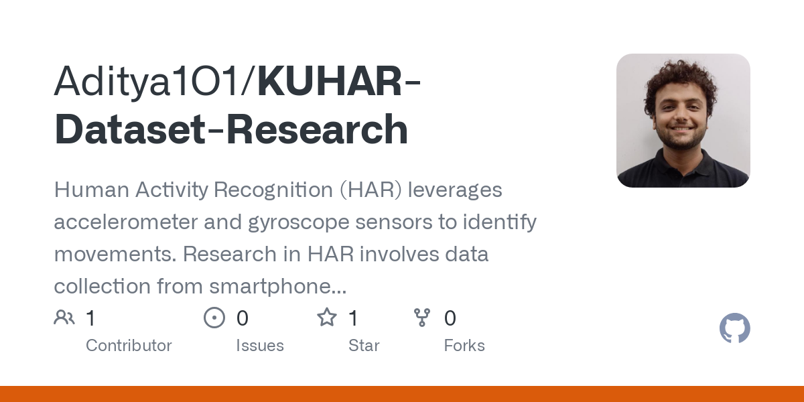

Human Activity Recognition using KU-HAR Dataset
Conducted in-depth research on the KU-HAR dataset and developed a robust Human Activity Recognition (HAR) system leveraging time-series sensor data from smartphones. Implemented and evaluated multiple deep learning models using Python and TensorFlow.
- Achieved 99% validation accuracy using Bi-LSTM and GRU models.
- Classified daily activities using accelerometer and gyroscope sensor data.
- Compared performance across RNN, CNN, LSTM, Bi-LSTM, and GRU models.
- Enhanced generalization and reduced overfitting through hyperparameter tuning.
PythonTensorFlowDeep Learning
RNNCNNLSTMBi-LSTMGRU
View on GitHub

Maize Crop Disease Classification using Custom CNN with Self-Attention
Designed and fine-tuned a Custom Convolutional Neural Network (CNN) integrated with a Self-Attention mechanism to identify diseases in maize crops. Focused on improving feature extraction by highlighting crucial image regions in the input leaf images.
- Achieved 91.53% validation accuracy after 15 training epochs with well-structured preprocessing and model tuning.
- Implemented Batch Normalization, Global Average Pooling, and Dropout to enhance model generalization and minimize overfitting.
- Utilized advanced regularization and data augmentation techniques for improved robustness on real-world datasets.
- Enabled accurate disease detection to support precision agriculture and crop health monitoring.
PythonTensorFlowCustom CNN
Self-AttentionImage Classification
BatchNormalizationGAPDropout
View on GitHub